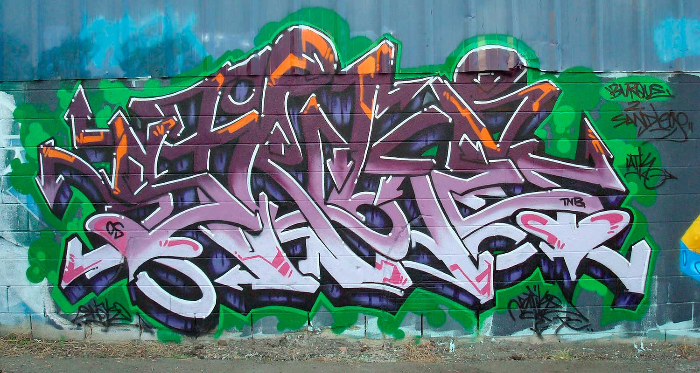

stane art
consiste em trazer a cultura
do grafite para todos !
nosso projeto
Sabemos que muitas pessoas ainda não reconhecem o grafite como arte e o tratam de forma marginalizada,
também sabemos que o grafite é uma arte bem conhecida nas comunidades mais humildes pois por falta de uma
boa educação não chegam a ter um acesso adequado com outros tipos de arte, com isso queremos fazer com que o
grafite seja um refugio para as crianças e jovens dessas comunidades humildes, e também queremos que o
grafite tenha mais reconhecimento e não seja taxado como crime, assim criamos nosso projeto para trazer essa
cultura para todos os tipos de pessoa.
historia do grafite no brasil
O grafite teve origem em Nova York e foi introduzido no Brasil no final da década de 1970,em formato de Stencil, trazido pelo Artista Alex Vallauri um etíope radicado no Brasil. Começou em São Paulo. Para esse movimento, o
grafite é a forma de expressar toda a opressão que a humanidade vive, principalmente os
menos favorecidos, ou seja, o grafite reflete a realidade das ruas. Os brasileiros não se
contentaram com o grafite norte-americano, então começaram a incrementar a arte com um
toque brasileiro. O estilo do grafite brasileiro é reconhecido entre os melhores de todo o
mundo.
tipos de grafite
Tag é a assinatura do grafiteiro. A tag é o nome do artista, que aparece próximo da arte no muro , normalmente feita com poucas letras em formato de pixo.
O stencil é o grafite feito através de um molde. Esse molde é recortado em radiografias ou qualquer outro material rígido. Usando essa arte, o spray é feito por cima, deixando o desenho na parede. É mais rápido de fazer e pode ser encontrado repetidas vezes em repetidos lugares.
O nome diz muita coisa. São aqueles grafites que dão a impressão de que estão saindo da parede, um dos estilos mais difíceis e que tem mais reconhecimento.

O estilo nasceu em Nova Iorque nos anos 70 e domina os muros. Entre letras e setas, um grafite bem colorido e quase indecifrável.
Grafite que usa mais letras, uma peça feita rapidamente. Thrown Up quer dizer "vômito" en inglês, o que pode dar uma noção melhor da forma como eles são feitos.Já o bombing são as letras arredondadas e bem próximas do Thrown Up
 cadastrar
cadastrar